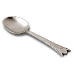

Recenti scoperte della fisica quantistica hanno dimostrato che, presa una particella e fatta passare per un foro, questa passa attraverso il foro. Fatta passare attraverso due fori, la stessa passa in entrambe le fessure. Come fà la particella a sapere che ci sono due fessure anzichè una? Da qui il dubbio che la materia sia cosciente, prevedendo in anticipo il test. Ermione riflette su ciò, mentre stà ultimando di lavare le posate nel lavabo. Forse ha trovato la spiegazione al perchè i cucchiai finiscono sempre per il trovarsi direttamente sotto il getto dell’acqua, facendo schizzi per tutta la cucina.Cucchiaioultima modifica: 2008-10-22T19:04:54+02:00da
Reposta per primo quest’articolo